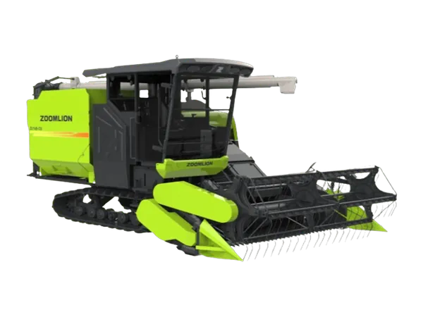
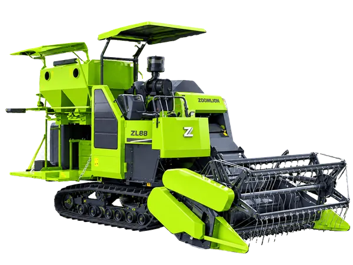
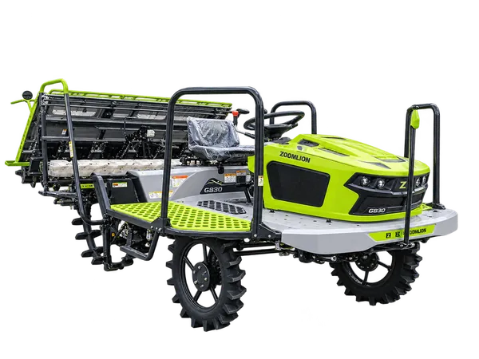
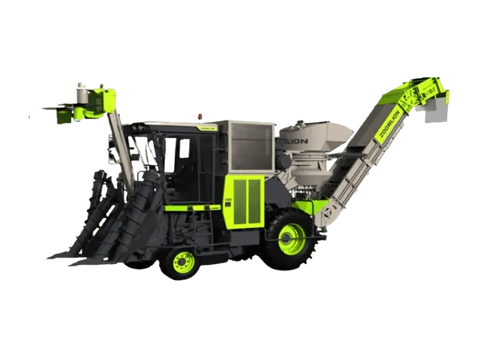
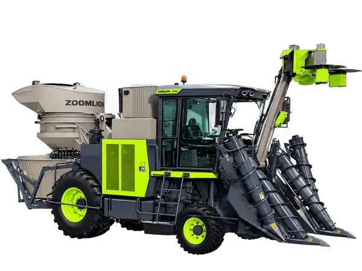
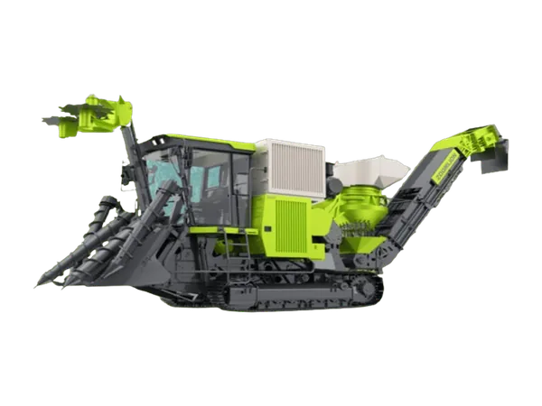
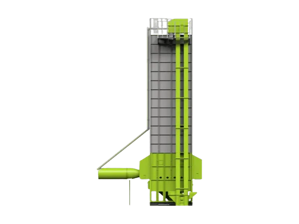
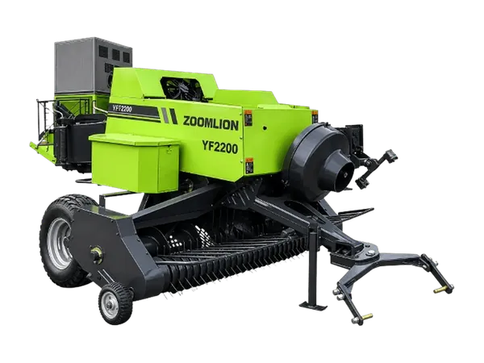
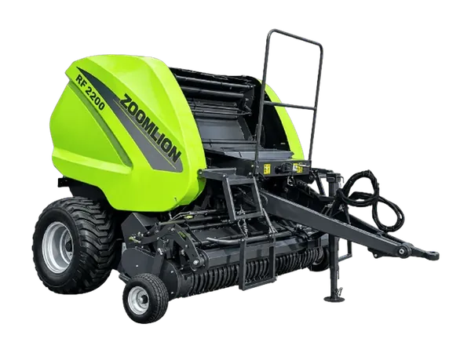
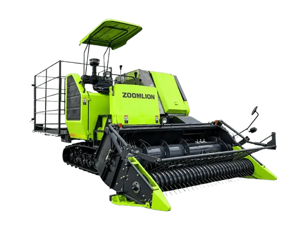

Jual Mesin Pertanian di Jakarta
Combine harvester, rice transplanter, mesin panen tebu, mesin pengering gabah, dan baler Zoomlion.
Tanya Harga Mesin Pertanian via WhatsAppZoomlion combine harvesters, rice transplanters, sugarcane harvesters, grain dryers, and balers.
Ask for Machinery Prices on WhatsAppPT Diesel Agri Sukses Sejahtera (DASS) menyediakan mesin pertanian Zoomlion untuk setiap tahap budidaya, dari tanam, panen, hingga pascapanen. Kantor kami berada di Cakung, Jakarta Timur.
Mulai dari rice transplanter untuk tanam padi, combine harvester untuk panen, mesin panen tebu untuk perkebunan, hingga mesin pengering gabah dan baler jerami, semuanya langsung dari distributor resmi.
Kenapa Membeli Mesin Pertanian di DASS?
Distributor Resmi
Unit resmi dari prinsipal, disertai dokumen pembelian lengkap.
Spesifikasi Lengkap
Data teknis, brosur PDF, dan fitur bandingkan unit tersedia langsung di website.
Tanya Cepat via WhatsApp
Tanya harga, minta brosur, atau konsultasi langsung dengan tim kami.
Konsultasi Teknis
Kami bantu menentukan unit yang sesuai luas lahan dan jenis pekerjaan.
PT Diesel Agri Sukses Sejahtera (DASS) supplies Zoomlion agricultural machinery for every stage of cultivation, from planting and harvesting to post-harvest. Our office is in Cakung, East Jakarta.
From rice transplanters for planting, combine harvesters for harvesting, and sugarcane harvesters for plantations to grain dryers and straw balers, all direct from the authorised distributor.
Why Buy Agricultural Machinery from DASS?
Authorised Distributor
Genuine units from the principal, with complete purchase documents.
Full Specifications
Technical data, PDF brochures, and a unit comparison tool right on our website.
Quick Answers on WhatsApp
Ask for prices, request a brochure, or talk directly with our team.
Technical Consultation
We help you choose the unit that fits your land and type of work.
PT Diesel Agri Sukses Sejahtera（DASS）提供覆盖种植、收获到产后各环节的中联重科农业机械。我们的办公室位于东雅加达Cakung。
从用于水稻栽插的插秧机、用于收获的联合收割机、用于种植园的甘蔗收获机，到谷物烘干机和秸秆打捆机，全部由授权经销商直接供应。
为什么选择在DASS购买农业机械？
授权经销商
原厂正品，附完整购买文件。
参数齐全
网站直接提供技术参数、PDF 宣传册和机型对比功能。
WhatsApp 快速咨询
询价、索取宣传册或直接与我们的团队沟通。
技术咨询
帮助您根据土地面积和作业类型选择合适的机型。

TE100
Combine Harvester

ZL105
Combine Harvester

H8-5500
Combine Harvester

F6-3000
Combine Harvester

H7-4500
Combine Harvester

ZL145
Combine Harvester

ZL125
Combine Harvester

ZL88
Combine Harvester

G630 / G825 / G830
Mesin Tanam Padi

C600
Mesin Panen Tebu

C610
Mesin Panen Tebu

C620
Mesin Panen Tebu

5HXH-30
Grain Dryer 5HXH-30
Mesin Pengering Gabah

5HXG-30E
Grain Dryer 5HXG-30E
Mesin Pengering Gabah

5HXG-30C1
Grain Dryer 5HXG-30C1
Mesin Pengering Gabah

5HXG-10W / 12.5W / 15W
Grain Dryer 10–15 Ton
Mesin Pengering Gabah

5HXG-20W / 30W
Grain Dryer 20–30 Ton
Mesin Pengering Gabah

9YF-2200
Square Baler 9YF-2200
Mesin Baler

9YY-2200
Round Baler 9YY-2200
Mesin Baler

9YZ-2200FB
Crawler Self-Propelled Baler 9YZ-2200FB
Mesin Baler
Pertanyaan yang Sering Diajukan
Di mana membeli mesin pertanian di Jakarta?
Anda bisa membeli mesin pertanian Zoomlion di PT Diesel Agri Sukses Sejahtera, Jalan River Garden Boulevard No. 19B, Cakung Timur, Jakarta Timur. Hubungi kami lewat WhatsApp 0811-1660-2926.
Berapa harga combine harvester dan mesin pertanian lainnya?
Harga tergantung jenis mesin, model, dan kapasitasnya. Hubungi tim kami untuk mendapatkan penawaran harga terbaru.
Mesin apa yang cocok untuk lahan saya?
Pilihan mesin tergantung luas lahan, jenis tanaman, dan kebutuhan di setiap tahap. Tim kami siap membantu menghitung kebutuhan Anda.
Baca Juga
Lihat Juga
- Jual Traktor di Jakarta
- Jual Drone Pertanian di Jakarta
- Traktor untuk Kebun Sawit
- Combine Harvester Padi
- Drone Pertanian untuk Sawah
- Kalkulator Semprot Drone & Pilih Traktor
Masih bingung memilih unit?
Ceritakan luas lahan dan jenis pekerjaan Anda, tim kami bantu memilihkan.
Frequently Asked Questions
Where can I buy agricultural machinery in Jakarta?
You can buy Zoomlion agricultural machinery from PT Diesel Agri Sukses Sejahtera, Jalan River Garden Boulevard No. 19B, Cakung Timur, East Jakarta. Contact us on WhatsApp 0811-1660-2926.
How much do combine harvesters and other machines cost?
The price depends on the type of machine, model, and capacity. Contact our team for the latest quotation.
Which machine suits my land?
The right machine depends on your land area, crop type, and needs at each stage. Our team can help calculate what you need.
Read Also
- Watch Out! Oil Oxidation in Agricultural Machinery
- How to Change Tractor Oil the Right Way and Save Money
See Also
- Tractors for Sale in Jakarta
- Agricultural Drones for Sale in Jakarta
- Tractors for Oil Palm Plantations
- Rice Combine Harvesters
- Agricultural Drones for Rice Fields
- Drone Spraying & Tractor Selection Calculator
Still unsure which unit to choose?
Tell us your land size and type of work, and our team will help you choose.
常见问题
在雅加达哪里可以买到农业机械？
您可以在PT Diesel Agri Sukses Sejahtera购买中联重科农业机械，地址：东雅加达Cakung Timur，Jalan River Garden Boulevard No. 19B。请通过WhatsApp 0811-1660-2926联系我们。
联合收割机等农机多少钱？
价格取决于机器类型、型号和产能。请联系我们的团队获取最新报价。
哪种机器适合我的土地？
合适的机器取决于土地面积、作物种类以及各环节的需求。我们的团队可以帮助您测算。
延伸阅读
另请参阅
还不确定选哪款机型？
告诉我们您的地块面积和作业类型，我们的团队帮您挑选。